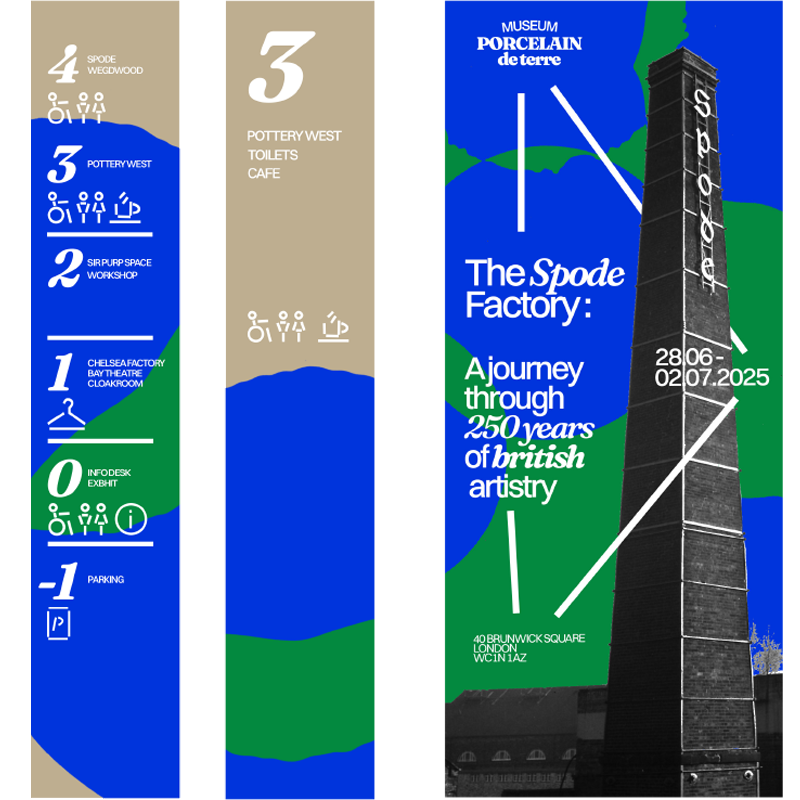
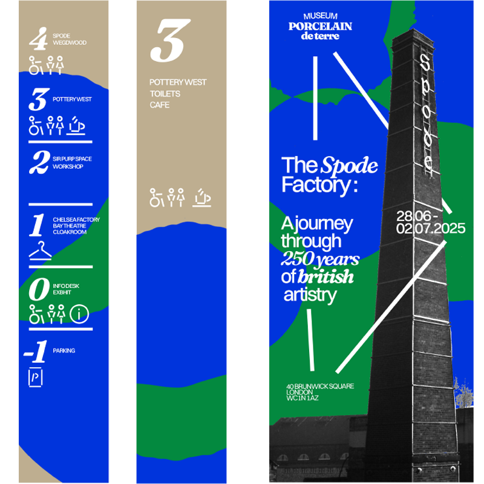

Learning Outdoors
A book aimed at helping autisitic and ADHD kids oporate through forest schooling
Museum of Porcelain
Brand identity for a porcelain museum, rooted in historical research and material culture. The system blends visual clarity with heritage, creating a design language that honors both craft and context.
 

Seasonal Living
Each hand-printed page represents time through seasonal colours, letting gradients, not clocks, guide the reader.
Hibakujumoku
A paper map that shows all the trees that surveived trees they are called: Hibakujumoku.